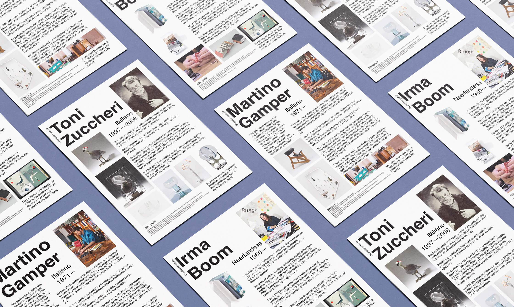
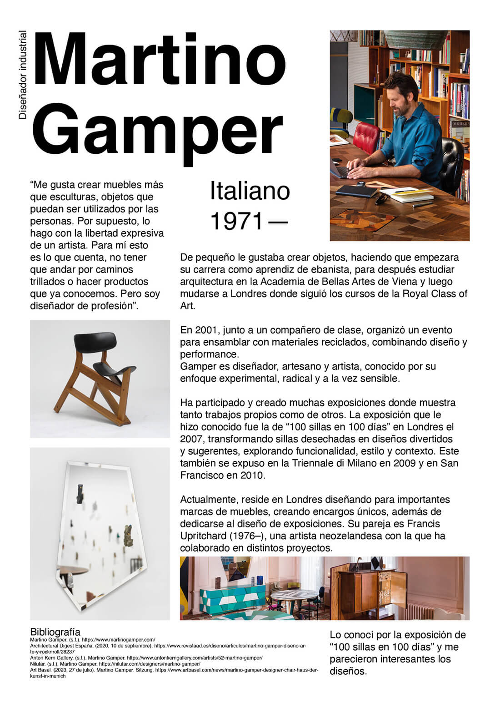
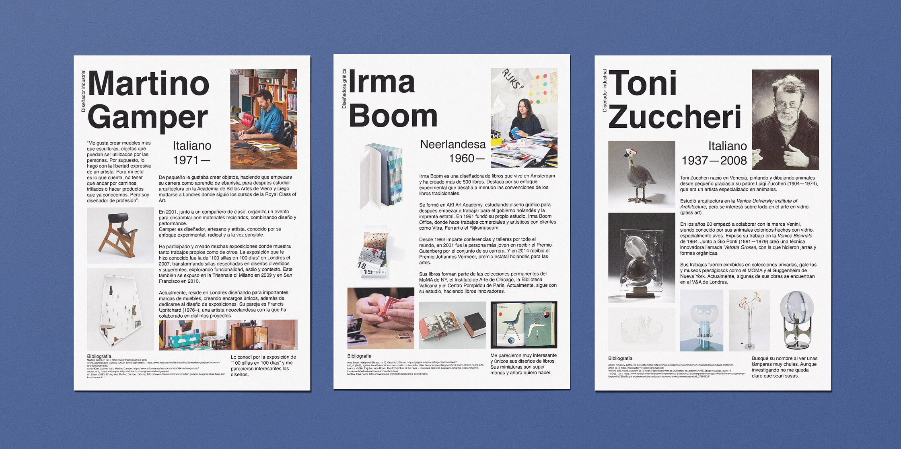

The Archive: Designers Index
2026
Personal Project

This personal project began as a way to actively research innovative designers, ultimately evolving into an ongoing, personal archive that I can return to whenever I need inspiration.
To manage this growing collection, I designed a clean, standardized layout that balances a brief biography with a personal selection of the designer's work. By establishing a highly functional and simple grid system, the visual structure is already resolved. This allows me to focus entirely on the research, curation, and analysis of each new profile, rather than redesigning the layout every time I want to learn about a new reference.
I share this archive on Substack alongside other writings. Explore it here.

